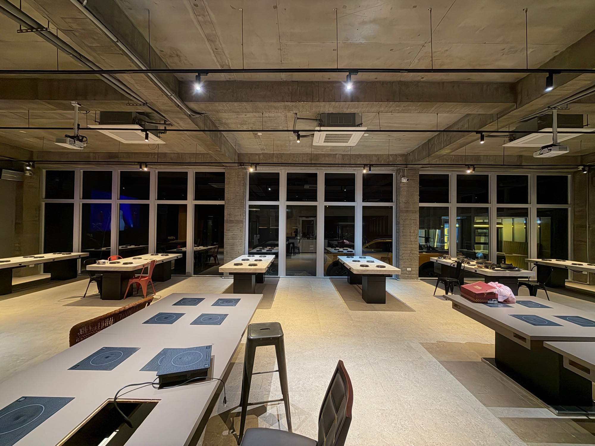
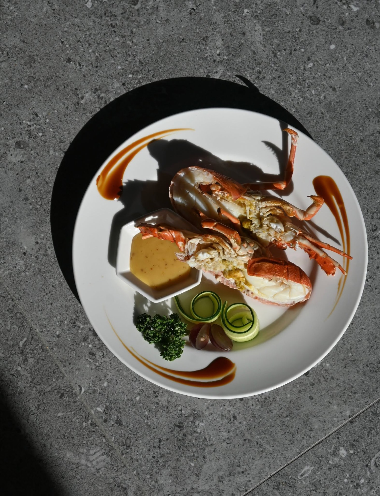
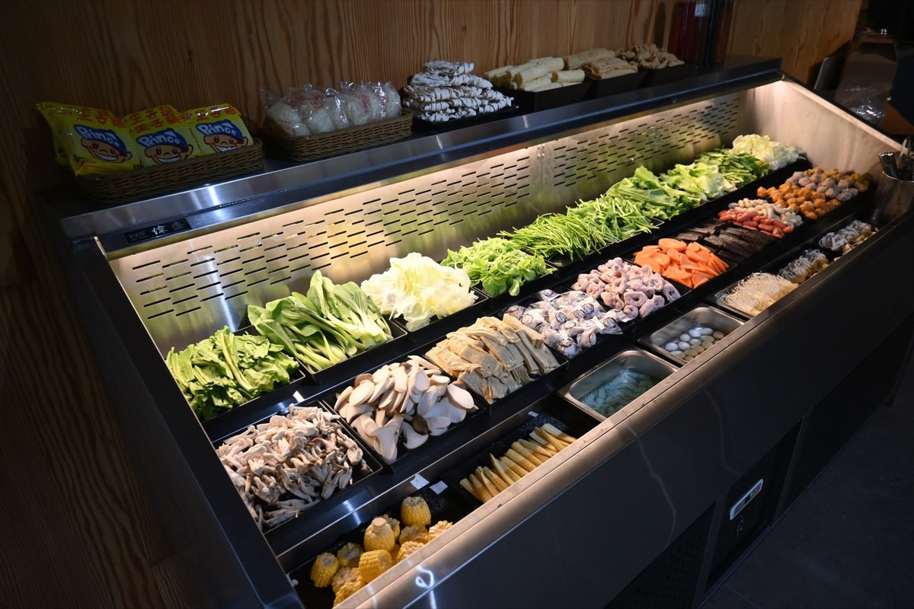
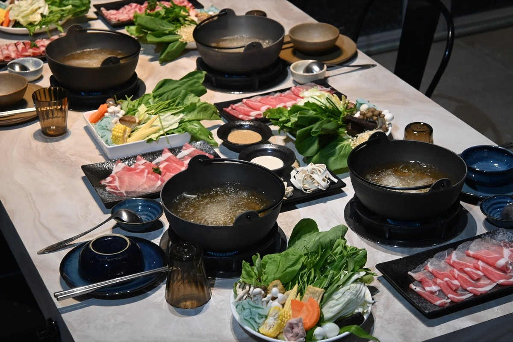
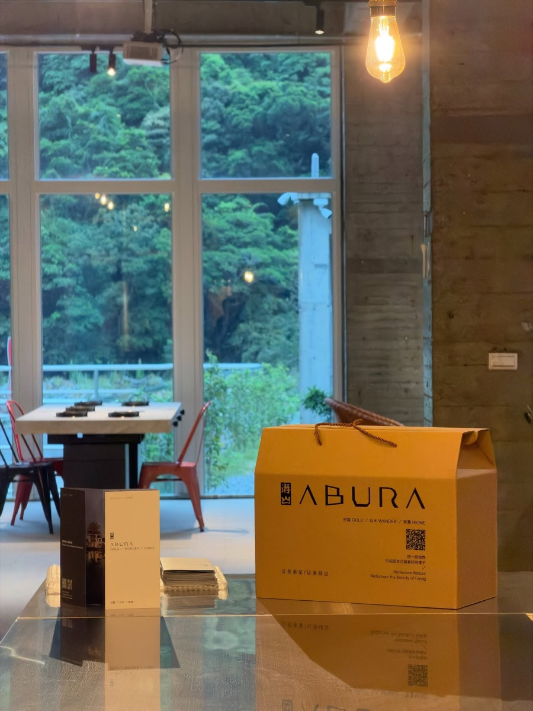

入住即享一泊三食：清晨的森林朝露早餐、午後的山林感官下午茶，
以及夜裡圍爐而坐的職人地誌鍋物。

Meals
一泊三食
以南澳在地食材入味的一日三餐
以南澳在地食材入味的一日三餐
入住即享一泊三食：清晨的森林朝露早餐、午後的山林感官下午茶，
以及夜裡圍爐而坐的職人地誌鍋物。
在面向山谷的落地窗前醒來，用一份早餐開啟慢下來的一天。

午後時光，以南澳在地食材與山林風味，靜享片刻的悠閒。

南澳椴木香菇・部落旬鮮湯底，時蔬自助無限、飲品甜點自助暢飲；在微涼的山谷夜晚，圍著熱氣慢慢品嚐。



職人地誌鍋物、山林感官下午茶與日歸湯屋，開放非住宿旅客預約。
查看日歸方案與預約 →